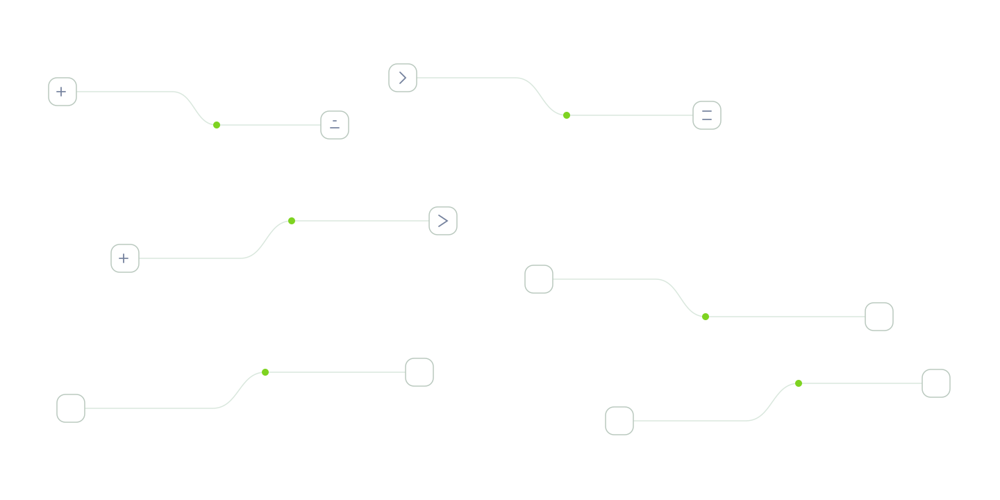
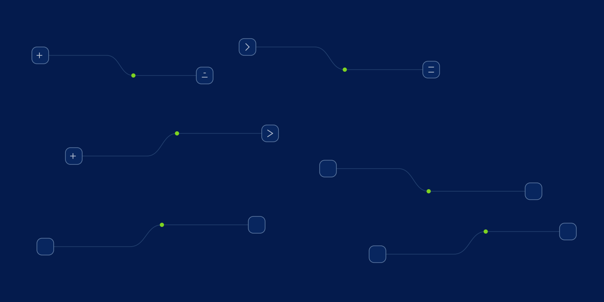
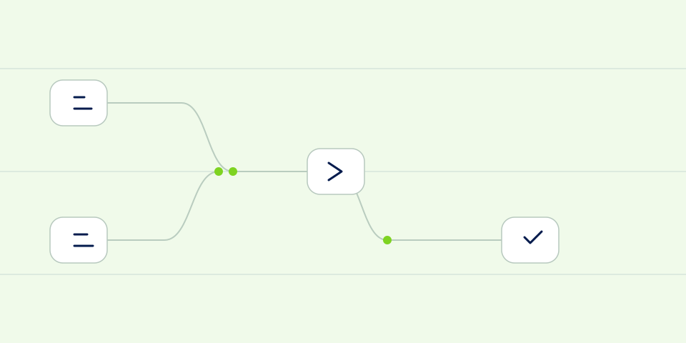
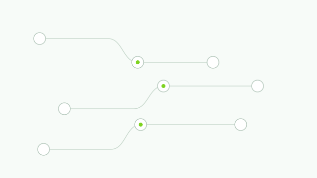
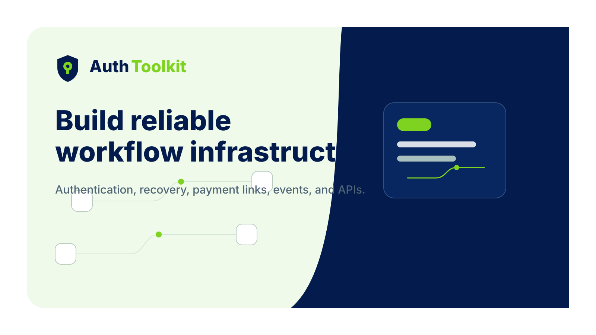

Main logo
brand/logos/authtoolkit-logo.svg
Internal brand system
A visual QA page for AuthToolkit media-kit assets, product UI patterns, landing pages, social templates, and future AI-generated design work.
Logo System
Primary logo text stays simple: Auth in navy, Toolkit in green. Dark usage switches Auth and the shield to white while preserving green emphasis.
brand/logos/authtoolkit-logo.svg
brand/logos/authtoolkit-logo-dark.svg
authtoolkit-logo-mark.svg
authtoolkit-logo-horizontal.svg
authtoolkit-logo-stacked.svg
Color Palette
Typography
Use bold, direct headlines for outcomes and operational clarity. Avoid hype and vague claims.
API orchestration
Route events, verification, recovery, and payment flows through clear infrastructure surfaces.
Pattern System

authtoolkit-infrastructure-pattern-light.svg

authtoolkit-infrastructure-pattern-dark.svg

authtoolkit-workflow-pattern.svg

authtoolkit-node-pattern.svg
Icon System
Authentication and trust
Platform primitives
Event delivery
Verification codes
Passwordless flows
Delivery systems
Recovery and retry
Revenue workflows
Component Showcase
Use feature cards for concise product capabilities with one icon, one outcome, and one supporting sentence.
$0 / pilot scan
Dashboard cards should emphasize status, routing, confidence, and next operational action.
POST /review/intake
{
"source": "github-app",
"mode": "production-strict"
}Use stat cards sparingly for executive-readable product proof.
Use navy structure, green actions, soft mint surfaces, and restrained copy.
Layout Rules
Use generous whitespace and clear grouping. Mobile sections should breathe before desktop grids expand.
Use rounded-xl cards and controls. Avoid extreme pill shapes except for badges and status labels.
Use shadows to separate surfaces, not to make floating decorative objects.
Stack first, then move to two- or three-column layouts where scanability improves.
Social Templates
Editable media assets for launch posts, docs links, and previews.
Open Graph
brand/social/og-image-template.svgLinkedIn banner
brand/social/linkedin-banner-template.svg
X / social post
brand/social/x-post-template.svg